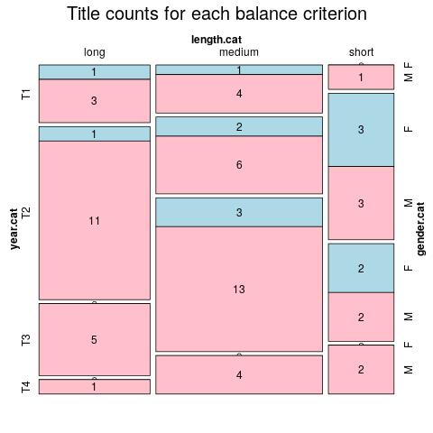

Click on a column heading to sort. Click on a text identifier to read the text (may not work in older browsers).
| Identifier | Encoding | Pages | Words | (Size) | Date (Slot) | Title | Author | Sex | Reprints |
|---|---|---|---|---|---|---|---|---|---|
| FRA0010 | eltec-1 | 0 | 61779 | (medium) | (T1) | La baronne trépassée : ELTeC edition | Ponson du Terrail, Pierre Alexis (1829-1871) | M | high |
| FRA0012 | eltec-1 | 0 | 64938 | (medium) | 1868 (T2) | La fée d’Auteuil : ELTeC edition | Ponson du Terrail, Pierre Alexis (1829-1871) | M | low |
| FRA0019 | eltec-1 | 0 | 85692 | (medium) | 1881 (T3) | Numa Roumestan : Mœurs Parisiennes : ELTeC edition | Daudet, Alphonse (1840-1897) | M | low |
| FRA0020 | eltec-1 | 0 | 87744 | (medium) | 1867 (T2) | Le petit chose : ELTeC edition | Daudet, Alphonse (1840-1897) | M | high |
| FRA0021 | eltec-1 | 0 | 46932 | (short) | 1890 (T3) | Port-Tarascon : Dernières aventures de l'illustre Tartarin : ELTeC edition | Daudet, Alphonse (1840-1897) | M | low |
| FRA0027 | eltec-1 | 0 | 23489 | (short) | 1873 (T2) | Une campagne en Kabylie : Récit d'un chasseur d'Afrique : ELTeC edition | Erckmann, Émile (1822-1899) | M | high |
| FRA0037 | eltec-1 | 0 | 58842 | (medium) | 1863 (T2) | Madame Thérèse, ou les volontaires de 92 : ELTeC edition | Erckmann, Émile (1822-1899) | M | high |
| FRA0038 | eltec-1 | 0 | 81303 | (medium) | 1865 (T2) | Waterloo : ELTeC edition | Erckmann, Émile (1822-1899) | M | high |
| FRA0040 | eltec-1 | 0 | 120122 | (long) | 1857 (T1) | Madame Bovary : ELTeC edition | Flaubert, Gustave (1821-1880) | M | high |
| FRA0041 | eltec-1 | 0 | 149810 | (long) | 1869 (T2) | L'Éducation sentimentale : ELTeC edition | Flaubert, Gustave (1821-1880) | M | high |
| FRA0042 | eltec-1 | 0 | 105395 | (long) | 1862 (T2) | Salammbô : ELTeC edition | Flaubert, Gustave (1821-1880) | M | medium |
| FRA0043 | eltec-1 | 0 | 53825 | (medium) | 1879 (T2) | Aziyadé : Extrait des notes et lettres d'un lieutenant de la marine anglaise : ELTeC edition | Loti, Pierre (1850-1923) | M | high |
| FRA0047 | eltec-1 | 0 | 73698 | (medium) | 1883 (T3) | Mon frère Yves : ELTeC edition | Loti, Pierre (1850-1923) | M | high |
| FRA0049 | eltec-1 | 0 | 57948 | (medium) | 1897 (T3) | Ramuntcho : ELTeC edition | Loti, Pierre (1850-1923) | M | high |
| FRA0052 | eltec-1 | 0 | 111187 | (long) | 1885 (T3) | Bel-Ami : ELTeC edition | Maupassant, Guy de (1850-1893) | M | high |
| FRA0053 | eltec-1 | 0 | 75586 | (medium) | 1889 (T3) | Fort comme la mort : ELTeC edition | Maupassant, Guy de (1850-1893) | M | high |
| FRA0056 | eltec-1 | 0 | 77338 | (medium) | 1883 (T3) | Une Vie : ELTeC edition | Maupassant, Guy de (1850-1893) | M | high |
| FRA0086 | eltec-1 | 0 | 144174 | (long) | 1866 (T2) | Voyages et aventures du Capitaine Hatteras : ELTeC edition | Verne, Jules (1828-1905) | M | high |
| FRA0087 | eltec-1 | 0 | 124725 | (long) | 1878 (T2) | Un capitaine de quinze ans : ELTeC edition | Verne, Jules (1828-1905) | M | high |
| FRA0144 | eltec-1 | 0 | 64881 | (medium) | 1899 (T3) | Le Jardin des supplices : ELTeC edition | Mirbeau, Octave (1848-1917) | M | high |
| FRA0148 | eltec-1 | 0 | 78132 | (medium) | 1888 (T3) | L'abbé Jules : ELTeC edition | Mirbeau, Octave (1848-1917) | M | high |
| FRA0175 | eltec-1 | 0 | 55614 | (medium) | 1898 (T3) | Le Secret de Wilhelm Storitz : ELTeC edition | Verne, Jules (1828-1905) | M | high |
| FRA0206 | eltec-1 | 0 | 35659 | (short) | (T4) | Marie-Claire : ELTeC edition | Audoux, Marguerite (1863-1937) | F | high |
| FRA0301 | eltec-1 | 0 | 72134 | (medium) | 1881 (T3) | Les Bandits de l'Arizona : ELTeC edition | Aimard, Gustave (1818-1883) | M | low |
| FRA0302 | eltec-1 | 0 | 90166 | (medium) | 1858 (T1) | Les Trappeurs de l'Arkansas : ELTeC edition | Aimard, Gustave (1818-1883) | M | low |
| FRA0311 | eltec-1 | 0 | 139255 | (long) | 1874 (T2) | Belle rivière : ELTeC edition | Aimard, Gustave (1818-1883) | M | low |
| FRA0322 | eltec-1 | 0 | 38400 | (short) | (T4) | Le Captain Cap : ELTeC edition | Allais, Alphone (1829-1871) | M | high |
| FRA0343 | eltec-1 | 0 | 50336 | (medium) | 1890 (T3) | Une pupille gênante : ELTeC edition | Dombre, Roger (Marguerite Sisson / Marguerite Ligeron) (1859-1914) | F | low |
| FRA0344 | eltec-1 | 0 | 24998 | (short) | 1889 (T3) | Folla : ELTeC edition | Dombre, Roger (Marguerite Sisson / Marguerite Ligeron) (1859-1914) | F | low |
| FRA0345 | eltec-1 | 0 | 40970 | (short) | 1890 (T3) | La Nounou : ELTeC edition | Dombre, Roger (Marguerite Sisson / Marguerite Ligeron) (1859-1914) | F | low |
| FRA0347 | eltec-1 | 0 | 35076 | (short) | 1877 (T2) | Un enfant gâté : ELTeC edition | Fleuriot, Zénaïde (1829-1890) | F | low |
| FRA0348 | eltec-1 | 0 | 38021 | (short) | 1874 (T2) | En congé : ELTeC edition | Fleuriot, Zénaïde (1829-1890) | F | low |
| FRA0350 | eltec-1 | 0 | 64184 | (medium) | 1881 (T3) | Alberte : ELTeC edition | Fleuriot, Zénaïde (1829-1890) | F | low |
| FRA0369 | eltec-1 | 0 | 45701 | (short) | 1888 (T3) | Quand je serai grande : ELTeC edition | Gouraud, Julie (Louise d'Aulnay) (1810-1891) | M | low |
| FRA0370 | eltec-1 | 0 | 45439 | (short) | 1876 (T2) | Les Filles du professeur : ELTeC edition | Gouraud, Julie (Louise d'Aulnay) (1810-1891) | M | low |
| FRA0379 | eltec-1 | 0 | 43343 | (short) | 1867 (T2) | Le petit colporteur : ELTeC edition | Gouraud, Julie (Louise d' Aulnay) (1810-1891) | M | low |
| FRA0384 | eltec-1 | 0 | 73470 | (medium) | 1909 (T4) | La Guerre des vampires : ELTeC edition | Le Rouge, Gustave (1867-1938) | M | high |
| FRA0392 | eltec-1 | 0 | 25038 | (short) | 1904 (T4) | L'Esclave amoureuse : ELTeC edition | Le Rouge, Gustave (1867-1938) | M | low |
| FRA0397 | eltec-1 | 0 | 76669 | (medium) | 1900 (T4) | La Conspiration des Milliardaires : ELTeC edition | Le Rouge, Gustave (1867-1938) | M | medium |
| FRA0409 | eltec-1 | 0 | 70236 | (medium) | 1869 (T2) | Romain Kalbris : ELTeC edition | Malot, Hector (1830-1907) | M | high |
| FRA0410 | eltec-1 | 0 | 123735 | (long) | 1878 (T2) | Sans famille : ELTeC edition | Malot, Hector (1830-1907) | M | high |
| FRA0415 | eltec-1 | 0 | 101840 | (long) | 1888 (T3) | Conscience : ELTeC edition | Malot, Hector (1830-1907) | M | low |
| FRA0426 | eltec-1 | 0 | 60935 | (medium) | 1883 (T3) | La Maréchale : ELTeC edition | Mirbeau, Octave (1848-1917) | M | high |
| FRA0445 | eltec-1 | 0 | 101840 | (long) | 1872 (T2) | Nanon : ELTeC edition | Sand, George (Amantine Lucile Aurore Dupin) (1804-1876) | F | high |
| FRA0458 | eltec-1 | 0 | 88165 | (medium) | 1866 (T2) | Le dernier amour : ELTeC edition | Sand, George (Amantine Lucile Aurore Dupin) (1804-1876) | F | high |
| FRA0474 | eltec-1 | 0 | 89027 | (medium) | 1840 (T1) | Le Compagnon du Tour de France : ELTeC edition | Sand, George (Amantine Lucile Aurore Dupin) (1804-1876) | F | high |
| FRA0476 | eltec-1 | 0 | 52092 | (medium) | 1869 (T2) | La Maison roulante : ELTeC edition | Stolz, Madame de (Fanny de Bégon) (1820-1898) | F | low |
| FRA0480 | eltec-1 | 0 | 52128 | (medium) | 1884 (T3) | La Maison blanche : ELTeC edition | Stolz, Madame de (Fanny de Bégon) (1820-1898) | F | low |
| FRA0482 | eltec-1 | 0 | 49150 | (short) | 1878 (T2) | Le Secret de Laurent : ELTeC edition | Stolz, Madame de (Fanny de Bégon) (1820-1898) | F | low |
| FRA0562 | eltec-1 | 0 | 42271 | (short) | 1842 (T1) | Albert Savarus : ELTeC edition | Balzac, Honoré de (1799-1850) | M | high |
| FRA0570 | eltec-1 | 0 | 111047 | (long) | 1847 (T1) | Le cousin Pons : ELTeC edition | Balzac, Honoré de (1799-1850) | M | high |
| FRA0572 | eltec-1 | 0 | 93200 | (medium) | 1841 (T1) | Le curé de village : ELTeC edition | Balzac, Honoré de (1799-1850) | M | high |
| FRA0605 | eltec-1 | 0 | 136999 | (long) | 1868 (T2) | Le Cavalier Fortune : ELTeC edition | Féval, Paul Henri Corentin (dit Paul Féval père) (1816-1887) | M | low |
| FRA0607 | eltec-1 | 0 | 103086 | (long) | 1857 (T1) | Les Errants de nuit : ELTeC edition | Féval, Paul Henri Corentin (dit Paul Féval père) (1816-1887) | M | low |
| FRA0615 | eltec-1 | 0 | 80151 | (medium) | 1843 (T1) | le Loup blanc : ELTeC edition | Féval, Paul Henri Corentin (dit Paul Féval père) (1816-1887) | M | high |
| FRA0656 | eltec-1 | 0 | 115269 | (long) | 1885 (T3) | La Grande Marnière : ELTeC edition | Ohnet, Georges (1848-1918) | M | low |
| FRA0657 | eltec-1 | 0 | 53382 | (medium) | 1890 (T3) | L'Âme de Pierre : ELTeC edition | Ohnet, Georges (1848-1918) | M | low |
| FRA0658 | eltec-1 | 0 | 50561 | (medium) | 1892 (T3) | Le Marchand de Poison : ELTeC edition | Ohnet, Georges (1848-1918) | M | low |
| FRA0726 | eltec-1 | 188985 | (long) | 1844 (T1) | Ellenore : ELTeC edition | Gay, Marie Françoise Sophie (1776-1852) | F | low | |
| FRA0771 | eltec-1 | 0 | 41108 | (short) | 1904 (T4) | L'aube : ELTeC edition | Rolland, Romain (1866-1944) | M | medium |
| FRA0775 | eltec-1 | 0 | 69465 | (medium) | 1908 (T4) | La foire sur la place : ELTeC edition | Rolland, Romain (1866-1944) | M | medium |
| FRA0780 | eltec-1 | 0 | 59882 | (medium) | 1912 (T4) | La nouvelle journée : ELTeC edition | Rolland, Romain (1866-1944) | M | medium |
| FRA0851 | eltec-1 | 0 | 181506 | (long) | 1913 (T4) | Du côté de chez Swann : ELTeC edition | Proust, Marcel (1871-1922) | M | high |
| FRA1003 | eltec-1 | 0 | 125052 | (long) | 1889 (T3) | Double-blanc : ELTeC edition | Boisgobey, Fortuné du (1821-1891) | M | low |
| FRA1005 | eltec-1 | 0 | 93657 | (medium) | 1881 (T3) | Le crime de l'omnibus : ELTeC edition | Boisgobey, Fortuné du (1821-1891) | M | low |
| FRA1021 | eltec-1 | 0 | 173622 | (long) | 1874 (T2) | L'Argent des autres : ELTeC edition | Gaboriau, Émile (1832-1873) | M | medium |
| FRA1155 | eltec-1 | 0 | 127326 | (long) | 1866 (T2) | Le crime d'Orcival : ELTeC edition | Gaboriau, Émile (1832-1873) | M | low |
| FRA1158 | eltec-1 | 0 | 269763 | (long) | 1869 (T2) | Monsieur Lecoq : ELTeC edition | Gaboriau, Émile (1832-1873) | M | high |
| FRA1177 | eltec-1 | 0 | 173240 | (long) | 1866 (T2) | La résurrection de Rocambole : ELTeC edition | Ponson du Terrail, Pierre Alexis (1829-1871) | M | low |
| FRA1184 | eltec-1 | 0 | 104131 | (long) | 1886 (T3) | Rubis sur l'ongle : ELTeC edition | Boisgobey, Fortuné du (1821-1891) | M | low |
| FRA18430 | eltec-0 | 15058 | (short) | ???? (T1) | Hervé : ELTeC edition | Stern, Daniel (Marie d'Agoult)(1805-1876) | F | low | |
| FRA18440 | eltec-0 | 332 | 44767 | (medium) !! | ???? (T1) | Le château de Pinon I: ELTeC edition | Comtesse Dash (1804-1872) | F | low |
| FRA18460 | eltec-0 | 65549 | (medium) | ???? (T1) | Nélida : ELTeC edition | Stern, Daniel (Marie d'Agoult)(1805-1876) | F | low | |
| FRA18520 | eltec-0 | 68770 | (medium) | ???? (T1) | Marguerite, ou Deux amours : ELTeC edition | Girardin, Delphine de (Delphine Gay)(1804-1855) | F | high | |
| FRA18520 | eltec-0 | 50316 | (medium) | ???? (T1) | La petite Jeanne : ELTeC edition | Carraud, Zulma (1796-1889) | F | high | |
| FRA18550 | eltec-0 | 36880 | (short) | ???? (T1) | Mademoiselle de Malepeire : ELTeC edition | Reybaud, Fanny (Hippolyte Arnaud) (1802-1871) | F | high | |
| FRA18660 | eltec-0 | 56517 | (medium) | ???? (T2) | La Maxicaine : ELTeC edition | Rattazzi, Marie (Marie-Lætitia Bonaparte-Wyse)(1831-1902) | F | low | |
| FRA18680 | eltec-0 | 21777 | (short) | ???? (T2) | Mon Village : ELTeC edition | Juliette Adam (1836-1936) | F | low | |
| FRA18790 | eltec-0 | 10562 | (short) | ???? (T2) | L’amie : ELTeC edition | Henry Gréville (1842-1902) | F | low | |
| FRA18820 | eltec-0 | 10455 | (short) | ???? (T3) | Ariadne : ELTeC edition | Henry Gréville (1842-1902) | F | low | |
| FRA18830 | eltec-0 | 28266 | (short) | ???? (T3) | Païenne : ELTeC edition | Juliette Adam (1836-1936) | F | low | |
| FRA18840 | eltec-0 | 38584 | (short) | ???? (T3) | Monsieur Vénus : ELTeC edition | Rachilde (Marguerite Vallette-Eymery) (1860-1953) | F | high | |
| FRA18870 | eltec-0 | 85847 | (medium) | ???? (T3) | La Marquise de Sade: ELTeC edition | Rachilde (Marguerite Vallette-Eymery) (1860-1953) | F | high | |
| FRA18870 | eltec-0 | 104043 | (medium) !! | ???? (T3) | La Sœur du Soleil : ELTeC edition | Gautier, Judith (1845-1917) | F | high | |
| FRA18930 | eltec-0 | 50150 | (medium) | ???? (T3) | Fleurs d'Orient : ELTeC edition | Gautier, Judith (1845-1917) | F | low | |
| FRA19000 | eltec-0 | 28724 | (short) | ???? (T4) | Les Princesses d'Amour: courtisanes japonaises : ELTeC edition | Gautier, Judith (1845-1917) | F | high | |
| FRA19030 | eltec-0 | 54730 | (medium) | ???? (T4) | La nouvelle espérance : ELTeC edition | Noailles, Anna de (1876-1933) | F | low | |
| FRA19100 | eltec-0 | 59906 | (medium) | ???? (T4) | Comme tout le monde : ELTeC edition | Delarue-Mardrus, Lucie (1874-1945) | F | low | |
| FRA19120 | eltec-0 | 34567 | (short) | (T2) | Vers Le Pôle En Aéroplane : ELTeC edition | Gilbert, Jehan (1880-1940) | M | unspecified | |
| FRA19200 | eltec-0 | 38294 | (short) | ???? (T4) | Chéri : ELTeC edition | Colette (1873-1954) | F | high | |
| FRA2001 | eltec-1 | 322 | 53880 | (medium) | ???? (T2) | Le piège aux maris : ELTeC edition | Rattazzi, Marie (1831-1902) | F | low |
| FRA2002 | eltec-1 | 291 | 56950 | (medium) | ???? (T3) | La seconde mère : ELTeC edition | Gréville, Henry (Alice Marie Céleste Durand) (1842-1902) | F | low |